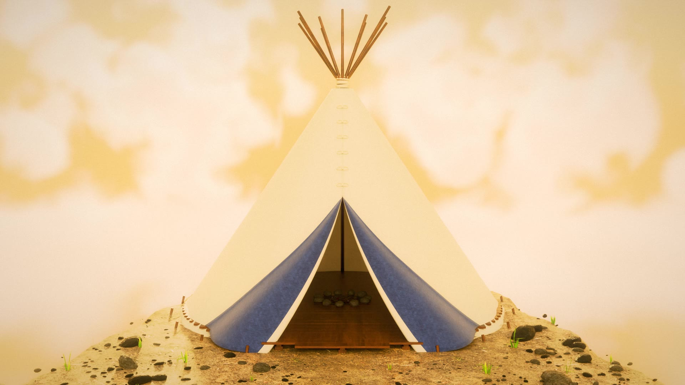

Sur iPhone, touche Partager en bas de Safari, puis « Sur l'écran d'accueil » : le feu s'ouvrira en plein écran.

Sur iPhone, touche Partager en bas de Safari, puis « Sur l'écran d'accueil » : le feu s'ouvrira en plein écran.
Aperçu : le feu n'est pas encore relié au web. Ces pages sont des exemples.